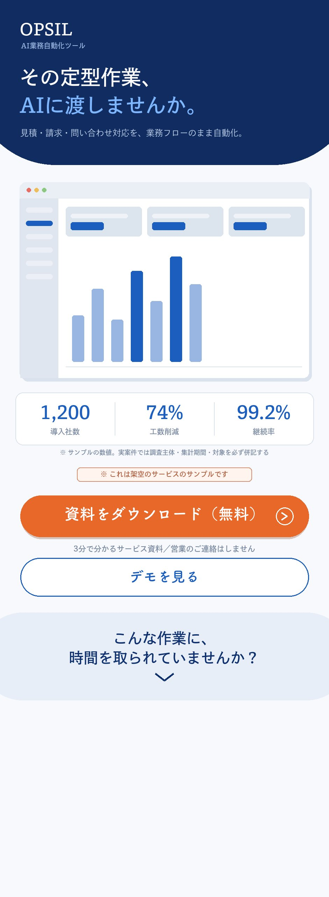
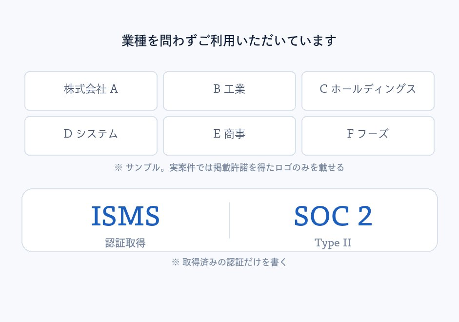
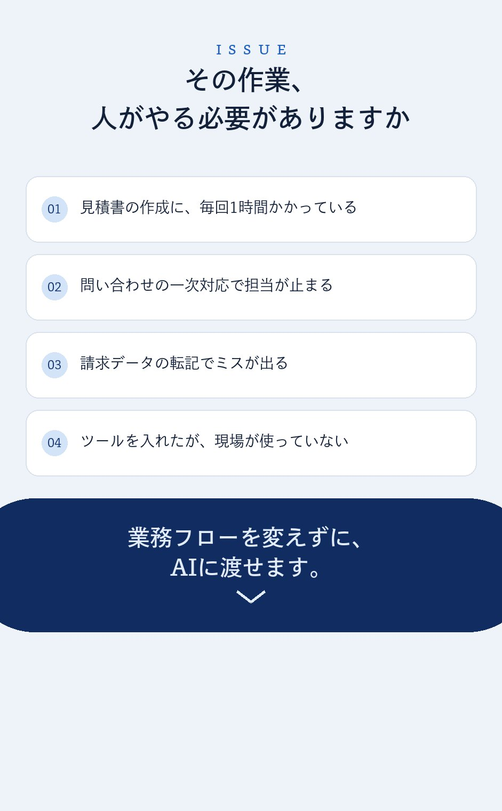
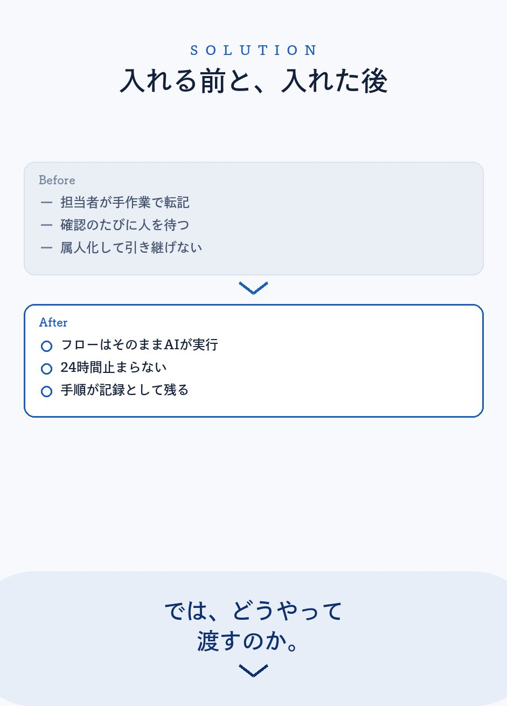
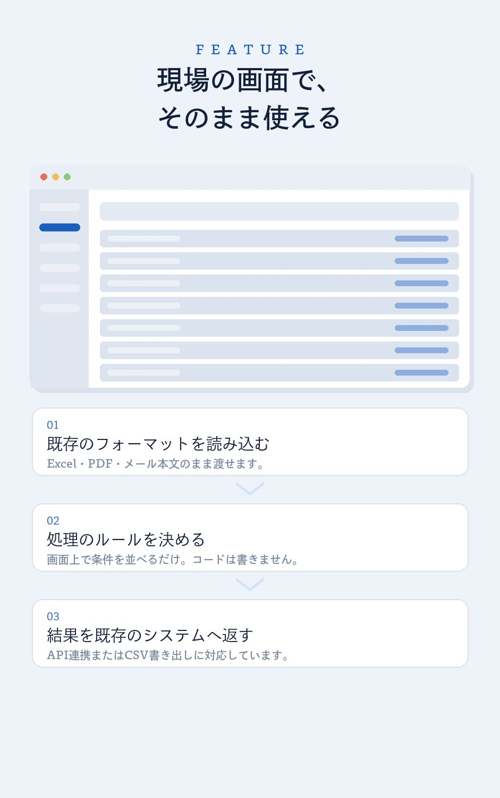
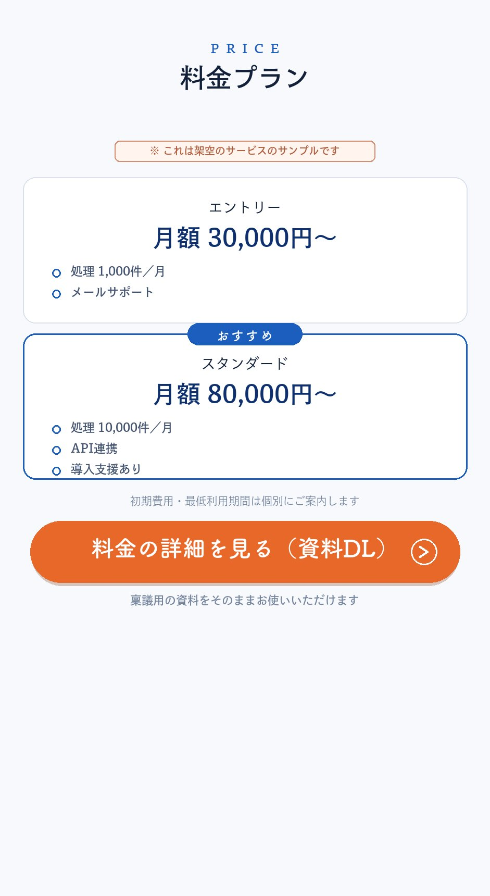
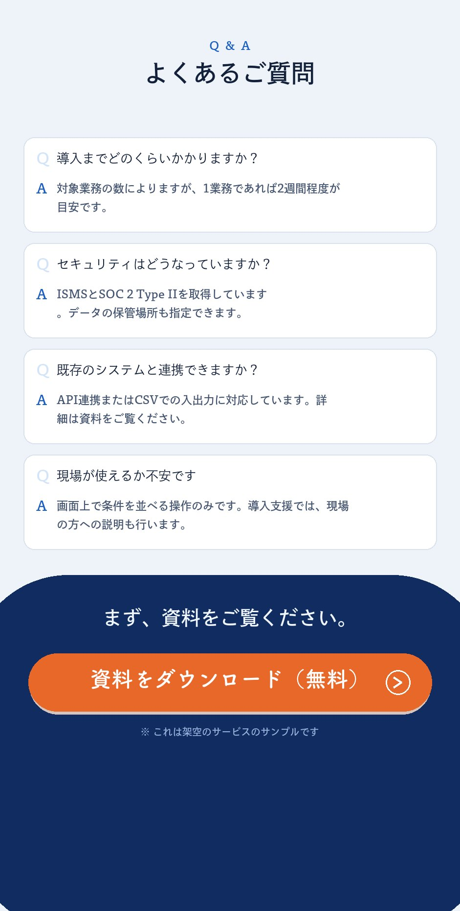

その定型作業、AIに渡しませんか。
見積・請求・問い合わせ対応を、業務フローのまま自動化。導入社数1,200社、工数削減74%、継続率99.2%。3分で分かるサービス資料を無料でダウンロードいただけます。営業のご連絡はしません。

業種を問わずご利用いただいています
製造・商社・システム・食品など業種を問わず導入されています。ISMSとSOC 2 Type IIの認証を取得しています。

その作業、人がやる必要がありますか
見積書の作成に毎回1時間かかっている。問い合わせの一次対応で担当が止まる。請求データの転記でミスが出る。ツールを入れたが現場が使っていない。

入れる前と、入れた後
導入前は担当者が手作業で転記し、確認のたびに人を待ち、属人化して引き継げませんでした。導入後はフローをそのままAIが実行し、24時間止まらず、手順が記録として残ります。

現場の画面で、そのまま使える
既存のフォーマットを読み込みます。ExcelもPDFもメール本文のまま渡せます。処理のルールは画面上で条件を並べるだけで、コードは書きません。結果はAPI連携またはCSV書き出しで既存のシステムへ返します。

料金プラン
エントリーは月額30,000円から、処理1,000件／月とメールサポート。スタンダードは月額80,000円から、処理10,000件／月、API連携、導入支援つき。初期費用と最低利用期間は個別にご案内します。

よくあるご質問
導入までは1業務であれば2週間程度が目安です。ISMSとSOC 2 Type IIを取得し、データの保管場所も指定できます。API連携またはCSVでの入出力に対応しています。操作は画面上で条件を並べるだけで、導入支援では現場の方への説明も行います。
